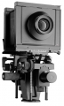

器材库 > 大幅面相机 > f2

规格总览
产品类型
Field Camera
规格
4×5英寸
发布日期
未知
移轴-前组
上升
30mm
下降
20mm
俯仰（前/后）
40°/40°
摇摆（左/右）
50°/50°
平移
左50mm, 右30mm
移轴-后组
上升
30mm
下降
20mm
俯仰（前/后）
40°/40°
摇摆（左/右）
50°/50°
平移
左40mm, 右20mm
其他规格
皮腔伸缩范围
40mm - 450mm
微调对焦距离
40mm
组件
相机底座，基础单轧（30cm），单轧尾套两枚，前框架f2，4×5英寸后框架f2，4×5英寸标准皮腔，4×5英寸对焦后背，镜头板框夹
重量
3600g
峰子冷2006-05-22 19:254.75 分
操作性 4.50功能性 5.00美观性 4.50趣味性 5.00耐用性 5.00性价比 4.50
zq10082004-06-06 16:294.58 分
操作性 4.00功能性 5.00美观性 5.00趣味性 4.50耐用性 4.00性价比 5.00
小镇2003-11-18 22:224.67 分
操作性 4.00功能性 4.00美观性 5.00趣味性 5.00耐用性 5.00性价比 5.00
产品图 / 样片
Sinar f2
评测 / 相关文章
该产品暂无存档的评测文章